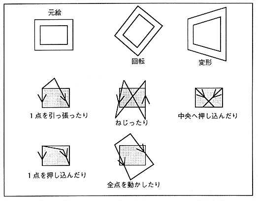

Deformable sprite. By specifying the coordinates of the four vertices of the character, the original picture can be transformed into any shape, so you can enlarge, reduce, rotate, and flip as you like. If this is seen as a polygon, it can be said that it is the same as a texture-mapped polygon (Figure 3.5).
Figure 3.5 Deformed sprite
